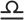
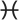

← Back to calendar
Coylendar
A lunizodiacal calendar — displaying the interplay of the tropical solar year
and the synodic lunar cycle. Each day is a colored parallelogram: the color
shows where the Sun sits in the zodiac, and the rows follow the Moon through
its phases. One screen shows roughly one astronomical season.
Legend
Zodiac signs
| Season | | Sign |
|---|
| Spring | | Aries |
| | Taurus |
| | Gemini |
| Summer | | Cancer |
| | Leo |
| | Virgo |
| Autumn |  | Libra |
| | Scorpio |
| | Sagittarius |
| Winter | | Capricorn |
| | Aquarius |
|  | Pisces |
Moon phases
| 🌑 | New Moon | — | Waxing Crescent | 🌒 |
| 🌓 | First Quarter | — | Waxing Gibbous | 🌔 |
| 🌕 | Full Moon | — | Waning Gibbous | 🌖 |
| 🌗 | Last Quarter | — | Waning Crescent | 🌘 |
What it shows
- Color — tropical zodiac sign of the Sun (12 hues, one per sign)
- Split cells — days where the Sun crosses a sign boundary are divided into two colored halves
- Date numbers — old-style numerals rendered as vector outlines for cross-browser consistency
- Month labels — bold small-cap abbreviations on the first of each month
- Zodiac symbols — on sign-change days the date number is replaced by the zodiac glyph
- Moon symbols — phase emoji positioned tangent to the diagonal cell edge at phase start/end
- Red text — Sundays
- Thick top line — the week containing a new moon
- Phase ticks — small marks at lunar phase boundaries
Usage
- Pan — drag (mouse or single-finger touch)
- Zoom — scroll wheel or pinch
- Next season — tap the canvas
- Previous season — double-tap the canvas
- Jump to date — open the date picker (☰ menu)
- Print — renders the current season at 150 dpi on letter-size paper
- Year view — select "Year (4 seasons)" in the menu